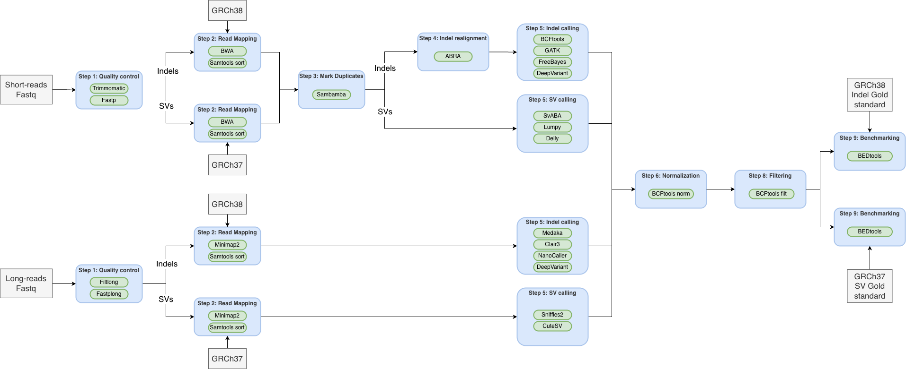

Assignment 2: Structural variants
The first assignment focused on single-nucleotide variants (SNV or SNP), where a single nucleotide is substituted for another. For this assignment, we will detect other types of genetic variation knowns as Indels and Structural Variants:
- Indels: Insertion/deletion polymorphisms are small additions (insertions) or loss (deletion) of one or multiple bases.
- Structural variants (SV): Are large additions, loss, or rearrangements of genetic material. The most common structural variants are:
- Deletions
- Insertions
- Duplications
- Translocations
- Inversions
Traditionally, indels are considered to be from 1bp to 50bp. This distinction is a bit arbitrary and is mostly based on early alignment tools, which mostly extended gaps (deletions) of up to around 50bp and where thus available to variant callers that relied on alignment statistics reported in the CIGAR string within the BAM file. Biologically, indels are typically caused by Replication slippage, while structural variants are caused by more complex mechanisms, including Nonallelic homologous recombination or Non-homologous end-joining (NHEJ). In reality, there’s no real consensus of when a variant is considered an indel and when it is a large insertion or deletion. Usually, indels are detected by variant callers that also detect SNPs (using the information about the alignment) and structural variants are detected by specialized software.
We will again use the human genome standard (HG002) as our gold standard, and we will compare our indels and SV against the set of variants present when comparing HG002 against the reference genome. For indels, we will use the same benchmarking set of variants against the GRCh38 human assembly. For SV, however, there’s only the set of variants in reference to the GRCh37, so we have to use that assembly instead.
Some reference papers regarding this dataset:
- Zook, J., Catoe, D., McDaniel, J. et al. Extensive sequencing of seven human genomes to characterize benchmark reference materials. Sci Data 3, 160025 (2016). https://doi.org/10.1038/sdata.2016.25
- Zook, J.M., McDaniel, J., Olson, N.D. et al. An open resource for accurately benchmarking small variant and reference calls. Nat Biotechnol 37, 561–566 (2019). https://doi.org/10.1038/s41587-019-0074-6
- Zook, J.M., Hansen, N.F., Olson, N.D. et al. A robust benchmark for detection of germline large deletions and insertions. Nat Biotechnol 38, 1347–1355 (2020). https://doi.org/10.1038/s41587-020-0538-8
- Liao, WW., Asri, M., Ebler, J. et al. A draft human pangenome reference. Nature 617, 312–324 (2023). https://doi.org/10.1038/s41586-023-05896-x
- Rhie, A., Nurk, S., Cechova, M. et al. The complete sequence of a human Y chromosome. Nature 621, 344–354 (2023). https://doi.org/10.1038/s41586-023-06457-y
We will compare the characteristics and SNP calls for three sequencing technologies: Illumina, PacBio HiFi, and Nanopore.
Learning objectives
At the end of this week’s assignment you will be able to:
- Understand the different types of structural variants
- Learn the different algorithms to detect structural variants in each sequencing technology
- Annotate structural variants in VCF format
- Visualize structural variants in IGV
- Merge structural variants in VCF format
- Benchmark structural variants
Input and outputs
The input for this assignment are the same fastq files generated by Illumina, PacBio HiFi and ONT of the standard human genome HG002 that we used in the previous assignment. Use the same chromosome you used in assignment 1.
Illumina files:
/project2/msalomon_1816/trgn_515/1_seq_techs/illumina/fastq
PacBio files:
/project2/msalomon_1816/trgn_515/1_seq_techs/pacbio/fastq
Nanopore files:
/project2/msalomon_1816/trgn_515/1_seq_techs/ont/fastq
Benchmarking file:
For indels:
/project2/msalomon_1816/trgn_515/1_seq_techs/benchmark/HG002_GRCh38_1_22_v4.2.1_benchmark.indels.vcf.gzFor SV:/project2/msalomon_1816/trgn_515/1_seq_techs/benchmark/HG002_GRCh37_SVs_Tier1_v0.6.vcf.gz
Human Reference Genome GRCh38
/project2/biodb/genomes/Homo_sapiens/NCBI/GRCh38/Sequence/BWAIndex/genome.fa
/project2/biodb/genomes/Homo_sapiens/NCBI/GRCh38/Sequence/WholeGenomeFasta/genome.fa
Human Reference Genome GRCh37
/project2/biodb/genomes/Homo_sapiens/NCBI/build37.2/Sequence/BWAIndex/genome.fa
/project2/biodb/genomes/Homo_sapiens/NCBI/build37.2/Sequence/WholeGenomeFasta/genome.fa
Original data can be found at: https://ftp-trace.ncbi.nlm.nih.gov/giab/ftp/data/AshkenazimTrio/HG002_NA24385_son/ For the benchmarking: https://ftp-trace.ncbi.nlm.nih.gov/giab/ftp/release/AshkenazimTrio/HG002_NA24385_son/NISTv4.2.1/GRCh38/ For the benchmarking of SVs: https://ftp-trace.ncbi.nlm.nih.gov/ReferenceSamples/giab/data/AshkenazimTrio/analysis/NIST_SVs_Integration_v0.6/
The final output will be a list of indels and structural variants.
Required software
In order to complete the assignment, the following tools need to be installed:
mamba install bioconda::filtlong
mamba install bioconda::minimap2
mamba install bioconda::seqtk
mamba install bioconda::seqkit
mamba install install bioconda::svaba
mamba install bioconda::lumpy-sv
mamba install install bioconda::delly
mamba install bioconda::sniffles
mamba install bioconda::cutesv
mamba install bioconda::pbsv
module load bwa
module load htslib
module load bcftools
module load samtools
module load fastqc
module load gcc/13.3.0
module load bedtools2/2.31.1
module load gatk/4.5.0.0Some of these softwares require specific versions of Python, so you need to create environments with those versions.
Alternatively, you can use this conda environments I prepared:
conda activate /project2/msalomon_1816/trgn_515/conda_env/trgn515
conda activate /project2/msalomon_1816/trgn_515/conda_env/nanocallerBioinformatics workflow
The bioinformatic pipeline used for this assignment is very similar to the assignment 1. In fact, as you can see in Fig. 1, part of the pipeline is already done for the indel discovery section, so be careful not to repeat unnecesary steps!
Be careful to use the right reference genome and benchmarking file for indels and for SV. GRCh37 will be used for SVs, while GRCh38 will be used for indels.

Many of the SV callers (and some indel callers) will output a VCF format with their own tags and filters that we haven’t seen before. Look at the VCF header to see what they mean.
Detection of Indels
Indels are usually detected using the same software tools as SNPs, as small gaps and insertions are part of the alignment process and their information is annotated within the BAM file.
From the list shared in the previous assignment:
- BCFtools - General variant caller, doesn’t work well for indels in long-read data
- GATK - General variant caller, not much benchmarking for indels in long-read data
- FreeBayes - General variant caller, doesn’t work well for indels in long-read data
- Longshot - It doesn’t call indels
- Medaka - Long read SNP and indel calling
- Clair3 - Long read SNP and indel calling
- Deepvariant - General variant caller, based on a machine learning model, it works well for both short- and long-read data
- Nanocaller - Long read SNP and indel calling
Medaka has recently been deprecated for variant calling in diploid organisms (it’s still widely used for haploid ones), so we won’t use it on this assignment.
Task 1: Indel calling
Call indels in each of the different sequencing platforms.
Call only Indels. Don’t forget to normalize your indels!
Illumina
Use one of the following variant callers: BCFtools, GATK, or FreeBayes.
# For bcftools or freebayes
conda activate /project2/msalomon_1816/trgn_515/conda_env/trgn515
# For GATK
conda activate /project2/msalomon_1816/trgn_515/conda_env/gatkFilters (some of these nomenclature may vary by caller):
- MQ < 20
- QUAL < 20
- DP < 20
- AD: if homozoygous, 10 reads; if heterozygous, 5 reads
eg: ‘FMT/GT ~ “1/1” & FMT/AD[:1] < 10’
You will have to complete the heterozygous filter on your own
ONT and PacBio
Use Nanocaller.
# For bcftools or freebayes
conda activate /project2/msalomon_1816/trgn_515/conda_env/nanocaller
NanoCaller ...Filters (some of these nomenclature mary vary by caller):
- MQ < 10
- DP < 20
- AD: if homozoygous, 10 reads; if heterozygous, 5 reads
NOTE: Use the Human GRCh38 assembly as reference genome.
- Create a slurm job to run the Indel calling code. Attach your code to the assignment (5pts)
Detection of Structural Variants
The world of SV detection software is a rare one. Many tools that were highly popular a few years ago (BreakDancer, Manta, etc.) are no longer supported, and many tools keep popping up, so it’s hard to keep up. Additionally, some tools are better at detecting one type of SV, so often you have to run one SV caller for each type of SV.
For illumina, some common variant callers still widely used include:
- SvABA (https://github.com/walaj/svaba)
- LUMPY (https://github.com/arq5x/lumpy-sv)
- DELLY (https://github.com/dellytools/delly)
For Long-read sequencing:
- Sniffles (https://github.com/fritzsedlazeck/Sniffles)
- cuteSV (https://github.com/tjiangHIT/cuteSV)
- NanoSV - For Oxford Nanopore (https://github.com/mroosmalen/nanosv)
- PBSV - For PacBio (https://github.com/PacificBiosciences/pbsv)
Filtering structural variants is a bit more complicated than filtering SNPs, and more often than not the SV callers themselves will do the filtering for you already.
Task 2: Structural variant calling
Call deletions, insertions, duplications and inversions.
For illumina data use Delly.
conda activate /project2/msalomon_1816/trgn_515/conda_env/trgn515
delly call ...For ONT and PacBio, use Sniffles2.
conda activate /project2/msalomon_1816/trgn_515/conda_env/sniffles
delly call ...For filtering, see your specific SV caller. If it already adds filter tags by default, use those.
NOTE: Use the Human GRCh37 assembly as reference genome. You will have to rerun rerun your mapping for illumina, ONT, and PacBio.
- Create a slurm job to run the variant calling code. Attach your code to the assignment (5pts)
- What is the minimum and maximum deletion size for Illumina, Nanopore and PacBio? Plot a the density distributions of deletions for Illumina, Nanopore and PacBio in a single figure. (10pts)
- What is the minimum and maximum insertion size for Illumina, Nanopore and PacBio? Plot a the density distributions of deletions for Illumina, Nanopore and PacBio in a single figure. (10pts)
Task 3: Discussion of detection methods
- Why can we use general variant calling software that relies on alignment statistics (eg: bcftools, GATK…) to detect small Indels, but require specialized algorithms to detect large SVs? (10pts)
Intersecting Structural Variants
Structural variants are more difficult to benchmark and intersect than SNPs because often the exactly start and end of a SV in not precisely known. For that reason, we are going to extend the start and end coordinates a few basepairs, and then we will intersect them without needing to match the coordinates perfectly.
For the benchmarking, we will divide our VCF files into INDEL and SV, and will use BEDtools to intersect with the benchmark VCF files.
For Structural Variants, the benchmarking file only has Deletions and Insertions, so we will remove any other SV from our file. You can do this using the SVTYPE field within the VCF file:
bcftools view -i 'SVTYPE="DEL" | SVTYPE="INS"' ...To perform the benchmarking, follow this steps:
Prepare genome files for BEDtools.
You will have to prepare one for GRCh37 and another one for GRCh38 (although you did this one in the previous assignment!)Convert the sample VCF file into BED format.
Using BEDtools, add 10bp downstream and upstream of your indel, and 100bp of your SV.
bcftools query
-i 'FILTER="PASS"' # Select only PASS variants
-f '%CHROM\t%POS0\t%END\n' # Print Chromosome, 0-based POS, END position
<input.vcf> # Onput VCF file
| bedtools slop
-g file.genome
-b <n> # Number of bases to add in each directionConvert the benchmark VCF file into BED format.
Using BEDtools, add 10bp downstream and upstream of your indel, and 100bp of your SV.Intersect variants.
Using BEDtools, intersect indels and SVs to their respective benchmark file.
Use a 50% reciprocal overlap to overlap the variants.
bedtools intersect
-a sample.bed
-b benchmark.bed
-f 0.50 # Fraction to overlap
-r # Reciprocal overlapTask 4: Calculate the FP and FN
The previous code will give you the True Positives (variants that overlap).
Find a way to use bedtools intersect to also find the False Positives and the False Negatives.
- Attach your code to calculate the FN and FP to the assignment. Briefly explain how the code works and why it calculates FN and FP. (10pts)
Task 5: Benchmarking of different sequencing technologies for Indel and SV calling.
The latest task consists of a comparison between the variant calls you obtained and the gold standard.
- How many indels are detected for each sequencing technology and how many are in the gold standard? (5pts)
- How many large deletions are detected and how many are in the gold standard? (5pts)
- How many large insertions are detected and how many are in the gold standard? (5pts)
- How many true positive, false positive and false negative large deletions are present for each sequencing technology? (5pts)
- How many true positive, false positive and false negative large insertions are present for each sequencing technology? (5pts)
- Calculate the precision, recall and F1 score for indels for each sequencing technology (5pts)
- Calculate the precision, recall and F1 score for large deletions for each sequencing technology (5pts)
- Calculate the precision, recall and F1 score for large insertions for each sequencing technology (5pts)
- Make the following grouped barplots. Group bars by metric, so for each metric you can have together the three sequencing technologies (35pts).
- Barplot for indels showing the precision, recall and F1 score
- Barplot for large deletions showing the precision, recall and F1 score
- Barplot for large insertions showing the precision, recall and F1 score